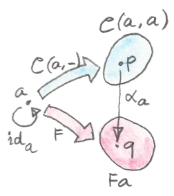

16 LemmaของYoneda (Sketch)
การสร้างส่วนใหญ่ในทฤษฎีcategoryนั้นคือการgeneralizeของผลลัพธ์จากอีกแขนงเฉพาะของคณิตศาสตร์ สิ่งอย่างproduct,coproduct,monoids,exponentialsและอื่นๆนั้นรู้มานานแล้วก่อนทฤษฎีcategory พวกมันอาจจะถูกรู้ภายใต้ชื่อที่แตกต่างกันในแขนงที่ต่างกันของคณิตศาสตร์ productแบบcartesianในทฤษฎีset meetในทฤษฎีลำดับ(order theory) conjunctionในตรรกศาสตร์ พวกมันทั้งหมดเป็นตัวอย่างเฉพาะของแนวคิดที่เป็นนามธรรมของproductในแบบcategory
LemmaของYonedaโดดเด่นในแนวทางนี้ในฐานะ คำกล่าวเกี่ยวกับcategoryต่างๆโดยทั่วไปที่แทบไม่ได้มาจากอีกแขนงต่างๆของคณิตศาสตร์ บางก็บอกว่าสิ่งที่ใกล้ที่สุดคือทฤษฎีบทของCayleyในทฤษฎีgroup(ทุกๆgroupนั้นisomorphicกับ groupของการเรียงสับเปลี่ยนของบางset)
พื้นฉากสำหรับlemmaของYonedaของcategory\(\textbf{C}\)ใดๆก็ตามคู่กับfunctor\(F\)จาก\(\textbf{C}\)ไปยัง\(\textbf{Set}\) เราได้เห็นในส่วนย่อยก่อนหน้านี้ว่าบางfunctorที่มีค่าแบบ\(\textbf{Set}\)สามารถมีตัวแทนได้ นั้นคือisomorphicกับhom-functor lemmaของYonedaบอกเราว่าfunctorที่มีค่าแบบ\(\textbf{Set}\)สามารถถูกนำมาได้มาจากhom-functorผ่านการแปลงแบบธรรมชาติและมันได้แจกแจงอย่างชัดแจ้งการแปลงต่างแบบนี้ทั้งหมด
ในตอนที่ผมพูดเกี่ยวกับการแปลงแบบธรรมชาติผมได้เอ่ยถึงว่าเงื่อนไขของความเป็นธรรมชาตินั้นค่อนข้างที่จะจำกัด ในตอนที่คุณนิยามส่วนประกอบของการแปลงแบบธรรมชาติที่วัตถุหนึ่ง ความเป็นธรรมชาติอาจจะมีกำลังมากพอในการ”ย้าย”ส่วนประกอบนี้ไปยังอีกวัตถุหนึ่งที่ถูกเชื่อมกับมันผ่านmorphism การที่มีลูกศรระหว่างวัตถุในcategoryเริ่มต้นและcategoryปลายทางมากนั้นก็จะมีข้อจำกับที่คุณมีสำหรับการเคลื่อนส่วนประกอบของการแปลงแบบธรรมชาติมากขึ้นเท่านั้น \(\textbf{Set}\)นั้นก็มาเป็นcategoryที่อุดมไปด้วยลูกศร
LemmaของYonedaบอกเราว่าการแปลงแบบธรรมชาติระหว่างhom-functorและfunctor\(F\)อื่นๆที่ได้กำหนดได้ทั้งหมดโดยการกำหนดค่าของแค่ส่วนประกอบหนึ่งที่จุดๆหนึ่ง และแปลงแบบธรรมชาติทั้งหมดก็ตามมาจากเงื่อนไขความเป็นธรรมชาติ
ดังนั้นเรามาทบทวนเงื่อนไขความเป็นธรรมชาติระหว่างสองfunctionที่เกี่ยวเนื่องกันในlemmaของYoneda functionตัวแรกคือhom-functor มันโยงวัตถุ\(x\)ใดๆก็ตามใน\(\textbf{C}\)ไปยังsetของmorphism\(\textbf{C}(a,x)\) สำหรับ\(a\)ที่คงที่ใน\(\textbf{C}\) เราก็ได้เห็นว่ามันโยงmorphism\(f\)ใดๆก็ตามจาก\(x\rightarrow y\)ไปยัง\(\textbf{C}(a,f)\)
functorที่สองคือfunctor\(F\)ที่มีค่า\(\textbf{Set}\)
เรามาเรียกการแปลงแบบธรรมชาติระหว่างfunctorทั้งสองว่า\(\alpha\) เพราว่าเราทำงานใน\(\textbf{Set}\) ส่วนประกอบของการแปลงแบบธรรมชาติอย่าง\(\alpha_x\)หรือ\(\alpha_y\)นั้นคือแค่functionระหว่างsetต่างๆ
\[ \begin{gather*} \alpha_x :: \textbf{C}(a, x) \to F x \\ \alpha_y :: \textbf{C}(a, y) \to F y \end{gather*} \]

และเพราะว่าสิ่งเหล่านี้คือแค่function เราสามารถที่จะมองที่ค่าของพวมมันที่จุดเฉพาะ แต่อะไรคือวัตถุประสงค์ของset\(\textbf{C}(a,x)\)? ที่นี้คือการสังเกตที่สำคัญว่าในทุกๆจุดของset\(\textbf{C}(a,x)\)นั้นก็เป็นmorphism\(h\)จาก\(a\)ไปยัง\(x\)
ดังนั้นsquareของความเป็นธรรมชาติสำหรับ\(\alpha\)บอกว่า:
\[ \alpha_y \circ \textbf{C}(a, f) = F f \circ \alpha_x \]
กลายมาเป็นการใช้ในแต่ละจุด ในตอนที่กระทำบน\(h\)
\[ \alpha_y (\textbf{C}(a, f) h) = (F f) (\alpha_x h) \]
คุณอาจจะจำได้จากบทก่อนหน้าว่าการกระทำของhom-functor\(\textbf{C}(a,-)\)บนmorphism\(f\)ถูกนิยามในฐานะการประกอบก่อน
\[ \textbf{C}(a, f) h = f \circ h \]
ที่นำไปสู่
\[ \alpha_y (f \circ h) = (F f) (\alpha_x h) \]
แค่ความรัดกุมของเงื่อนไขนี้สามารถถูกมองโดยการทำให้อยู่ในกรณีของ\(x=a\)

ในกรณีแบบนี้\(h\)กลายมาเป็นmorphismจาก\(a\)ไปยัง\(a\) เรารู้ว่าได้มีอย่างน้อยmorphismคือ\(h=\operatorname{id}_a\)เรามานำมันเข้าไป
\[ \]
สังเกตในสิ่งที่พึ่งเกิดขึ้นที่ว่าในส่วนของด้านซ้ายมือคือการกระทำของ \(\alpha_y\)บนสมาชิกเท่าไป\(f\)ของ\(\textbf{C}(a,y)\) และมันนั้นถูกกำหนดอย่างทั้งหมดโดยค่าๆเดี่ยวของ\(\alpha_a\)ที่\(\operatorname{id}_a\)เราสามารถเลือกค่าใดๆก็ตามและมันจะสร้างการแปรงแบบธรรมชาติออกมา เนื่องด้วยค่าของ\(\alpha_a\)นั้นอยู่ในset\(Fa\) ทุกๆสมาชิกใน\(Fa\)จะนิยามบาง\(\alpha\)
ในทางกลับกันถ้าเรามีการแปรงแบบธรรมชาติ\(\alpha\)จาก\(\textbf{C}(a,-)\)ไปยัง\(F\)คุณสามารถที่จะประเมินมันที่\(\operatorname{id}_a\)ที่จะได้สมาชิกใน\(Fa\)
เราได้พิสูจน์lemmaของYonedaแล้ว
ได้มีการคู่กับแบบหนึ่งต่อหนึ่งระหว่างการแปลงแบบธรรมชาติจาก\(\textbf{C}(a,-)\)ไปยัง\(F\)และสมาชิกของ\(Fa\)
หรืออีกในคำหนึ่ง
\[ \textbf{Nat}(\textbf{C}(a,-),F)\cong Fa \]
หรือถ้าเราใช้เครื่องหมายของ\([\textbf{C},\textbf{Set}]\)จากcategoryของfunctorระหว่าง\(\textbf{C}\)กับ\(\textbf{Set}\) setของการแปลงแบบธรรมชาติคือแค่hom-setในcategoryนั้นและเราสามารถเขียนว่า
\[ [\textbf{C},\textbf{Set}]\big(\textbf{C}(a,-),F\big)\cong Fa \]
ผมจะอธิบายในภายหลังว่าการคู่กันแบบนี้นั้นคือisomorphismแบบธรรมชาติ
ในตอนนี้เรามาลองที่จะทำความเข้าใจกับผลลัพธ์นี้ สิ่งที่สุดยอดคือว่าการแปลงแบบธรรมชาติตกผลึกจากแค่จุดๆเดียวที่ก็คือค่าที่เรากำหนดมันที่\(\operatorname{id}_a\) มันขยายจากจุดๆนั้นตามมาจากเงื่อนไขความเป็นธรรมชาติ มันขยายไปทั้งimageของ\(\textbf{C}\)ใน\(\textbf{Set}\) ดังนั้นเรามาเริ่มด้วยพิจารณาอะไรคือimageของ\(\textbf{C}\)ภายใต้\(\textbf{C}(a,-)\)
เรามาเริ่มด้วยimageของ\(a\)เอง ภายใต้hom-functor\(\textbf{C}(a,-)\) \(a\)ถูกโยงไปยังset\(\textbf{C}(a,a)\) ภายใต้functor\(F\)ในอีกทางหนึ่งมันนั้นถูกโยงไปยังset\(Fa\) ส่วนประกอบของการแปลงแบบธรรมชาติ\(\alpha_a\)คือบางfunctionจาก\(\textbf{C}(a,a)\)ไปยัง\(Fa\) เรามาให้ความสำคัญกับจุดๆหนึ่งของset\(\textbf{C}(a,a)\)จุดๆที่ตรงกันกับmorphism\(\operatorname{id}_a\) ในการเน้นความจริงที่ว่ามันคือแค่จุดๆหนึ่งในset เรามาเรียกมันว่า\(p\) ส่วนประกอบ\(\alpha_a\)ควรที่จะโยง\(p\)ไปบังบางจุดอย่าง\(q\)ใน\(Fa\)ผมจะแสดงให้คุณเห็นว่าตัวเลือกใดๆของ\(q\)นำไปสู่การแปลงแบบธรรมชาติที่เป็นเอกลักษณ์
อีกครั้ง\(\textbf{C}(a,g)\)กระทำบน\(p\)ของเราน้นให้มาโดยการประกอบก่อนหน้า\(g\circ\operatorname{id}_a\)ที่ตรงกันกับจุด\(p'\)ใน\(\textbf{C}(a,x)\) ความเป็นธรรมาชาติกำหนดค่าของ\(\alpha_x\)กระทำบน\(p'\)ในการที่ว่า
\[ q'=(Fg)q \]
เนืื่องด้วยว่า\(p'\)นั้นเป็นอะไรก็ได้ functionทั้งหมด\(\alpha_x\)นั้นถูกกำหนดแล้ว

แล้วถ้ามีวัตถุใน\(\textbf{C}\)ที่ไม่มีการเชื่อมต่อใน\(a\)? พวกมันนั้นถูกโยงทั้งหมดภายใต้\(\textbf{C}(a,-)\)ไปยังsetเดียวคือsetว่าง จำได้ว่าsetว่างนั้นคือวัตถุเริ่มในcategoryของset นั้นหมายความว่าได้มีfunctionที่เป็นเอกลักษณ์จากsetนี้ไปยังsetอื่นๆ เราเรียกfunctionนี้ว่าabsurd ดังนั้นในที่นี้อีกครั้ง เราไม่มีทางเลือกสำหรับส่วนประกอบของการแปลงแบบธรรมชาติมันเป็นได้แค่absurd
หนึ่งวิธีในการทำความเข้าใจlemmaของYonedaนั้นคือการเข้าใจได้ว่าการแปลงแบบธรรมชาติระหว่างfunctorที่มีค่าของ\(\textbf{Set}\)นั้นคือแค่ชุดของfunctionsและfunctionนั้นโดยทั่วไปแล้วสูญเสียข้อมูล(lossy) functionอาจจะรวบข้อมูลและมันอาจจะแค่คลุมในบางส่วนของcodomain functionเดียวที่ไม่สูญเสียข้อมูลคืออันที่สามารถถูกinverseได้ (นั้นก็คือisomoprhism) ดังนั้นมันตามมาว่าfunctorที่มีค่า\(\textbf{Set}\)ที่คงไว้ซึ่งโครงสร้างที่ดีที่สุดคืออันที่มีคัวแทนได้ พวกมันนั้นเป็นhom-functorหรือfunctorที่isomorphicแบบธรรมชาติกับhom-functor functor\(F\)อื่นๆก็ได้มาจากhom-functorผ่านการแปลงที่สูญเสียข้อมูล การแปลงแบบนี้อาจจะไม่แค่สูญเสียข้อมูลแต่มันอาจจะก็คลุมในแค่บางส่วนของfunctor\(F\)ใน\(\textbf{Set}\)
16.1 YonedaในHaskell
เราได้เจอhom-functorในHaskellภายใต้รูปแบบของfunctorแบบreader
type Reader a x = a -> xreaderนี้โยงmorphism(ในที่นี้คือfunction)โดยการประกอบก่อน
instance Functor (Reader a) where
fmap f h = f . hLemmaของYonedaบอกเราว่าfunctorแบบreaderสามารถถูกโยงแบบธรรมชาติไปยังfunctorใดๆก็ตาม
การแปลงแบบธรรมชาตินั้นคือfunctionแบบpolymorphic ดังนั้นถ้าเรามีfunctorFเรามีการโยงจากมันไปยังfunctorแบบreader
alpha :: forall x . (a -> x) -> F xเหมื่อนทั่วไป forallนั้นไม่บังคับแต่ผมชอบที่จะเขียนมันอย่างชัดแจ้งเพื่อที่จะย้ำความเป็นpolymorphismแบบparametricของการแปลงแบบธรรมชาติ
LemmaของYonedaบอกเราว่าการแปลงแบบธรรมชาติเหล่านี้นั้นตรงกันแบบหนึ่งต่อหนึ่งกับสมาชิกของF a
forall x . (a -> x) -> F x ≅ F aในทางด้านขวาของสมการนี้คือสิ่งที่เรามักจะพิจารณาเป็นdata structure จำการตีความแบบนี้ของfunctorในฐานะภาชนะแบบกว้างๆได้หรือเปล่า? F a เป็นภาชนะของa แต่ในทางด้านช้ายคือfunctionแบบpolymorphicที่นำfunctionในฐานะargument lemmaของYonedaนั้นบอกเราว่าตัวแทนของทั้งสองนั้นเท่ากัน ก็คือพวกมันเก็บข้อมูลเดียวกัน
อีกทางหนึ่งของการพูดคือว่าถ้าให้functionแบบpolymorphicกับเราของtypeอย่าง
alpha :: forall x . (a -> x) -> F xและผมจะสร้างภาชนะของa เคล็ดลับคือสิ่งที่เราได้ใช้ในการพิสูจน์ของlemmaของYonedaคือเราเรียกfunctionนี้กับidในการที่ได้มาซึ่งสมาชิกของF a
alpha id :: F aในทางกลับกันก็เป็นจริงคือถ้าให้เราtypeF a
fa :: F aเราสามารถที่จะนิยามfunctionแบบpolymorphicอย่าง
alpha h = fmap h faของtypeที่ถูกต้อง คุณสามารถที่จะกลับไปกลับมาระหว่างตัวแทนทั้งสองแบบ
ข้อดีของการที่มีตัวแทนหลายๆตัวคือว่าเราอาจจะง่ายกว่าในแบบหนึ่งกับการประกอบหรือเราอาจจะมีประสิทธิภาพมากกว่าในบางการใช้งานกับอีกแบบหนึ่ง
ตัวอย่างที่เรียบง่ายที่สุดของหลักการนี้คือการแปลงโค้ดที่มักจะใช้ในการสร้างcomplierคือรูปแบบการส่งแบบต่อเนื่อง(continuation passing style)หรือCPS มันคือการใช้งานที่เรียบง่ายที่สุดของlemmaของYonedaไปยังfunctorแบบidentity แทนที่Fด้วยidentityให้เราได้
forall r . (a -> r) -> r ≅ aการตีความของสูตรนี้คือว่าในtypeaใดๆก็ตามสามารถแทนที่โดยfunctionที่นำ”handler”(ตัวดูแล)สำหรับa handlerคือfunctionในการรับaและทำการปฏิบัติการคำนวณที่เหลือนั้นก็คือความต่องเนื่อง (typerมักจะencapsulates รหัสฐานะบางอย่าง)
รูปแบบนี้ของการเขียนโปรแกรมนั้นเป็นสิ่งที่ทั่วไปมากในUI ในระบบแบบasynchronousและในการเขียนโปรแกรมแบบconcurrent ข้อเสียของCPSคือการที่ว่ามันรวมไปถึงการกลับกันของการควบคุม โค้ดนั้นแยกระหว่างตัวสร้าง(producers)และตัวใช้งาน(consumersหรือhandlers)และไม่สามารถแยกออกจากกันได้ง่ายนัก ใครก็ตามที่ได้ทำการเขียนโปรแกรมของwebsiteที่ไม่ตรงไปตรงมาไม่มากก็น้อยนั้นจะคุ้นเคยกับโค้ดที่ยุ่งเหยิงจาก handlerที่มีสถานะที่ปฏิสัมพันธ์กัน แล้วสิ่งที่เราได้เห็นหลังจากนี้ การใช้งานแบบรอบคอบของfunctorและmonadsสามารถก่อให้เกิดคุณสมบัติทางการประกอบของCPS
16.2 Co-Yoneda
เหมือนทุกๆครั้ง เราได้มีการสร้างเพิ่มเติมโดยการพลิกกับทิศทางของลูกศร LemmaของYonedaสามารถที่จะถูกใช้ในcategoryตรงข้าม\(\textbf{C}^\text{op}\)ในการให้เราการโยงระหว่างfunctorแบบcontravariant
เหมือนๆกัน เราสามารถในการได้มาซึ่งlemmaของYonedaโดยการให้วัตถุจุดหมายคงที่ของhom-functorของเราแทนที่จะเป็นจุดเรื่มต้น เราได้มาที่hom-functorแบบcontravariantจาก\(\textbf{C}\)ไปยัง\(\textbf{Set}\)อย่าง\(\textbf{C}(-,a)\) lemmaของYonedaแบบสร้างให้เกิดการโยงแบบหนึ่งต่องหนึ่งระหว่างการแปลงแบบธรรมชาติจากfunctorนี้ไปยังfunctorแบบcontravariantใดๆก็ตามและสมาชิกของset\(Fa\)ว่า
\[ \textbf{Nat}(\textbf{C}(-,a),F)\cong Fa \]
ในที่นี้คือรูปแบบของHaskellของlemmaแบบco-Yonedaว่า
forall x . (x -> a) -> F x ≅ F aสังเกตว่าในบางสิ่งตีพิมพ์มันคือรูปแบบของcontravariantของสิ่งถูกเรียกว่าlemmaของYoneda
16.3 โจทย์ท้าทาย
- ลองแสดงว่าสองfunction
phiและpsiที่ก่อให้เกิดisomorphismแบบYonedaในHaskellนั้นคือinverseซึ่งกันและกัน
phi :: (forall x . (a -> x) -> F x) -> F a
phi alpha = alpha id
psi :: F a -> (forall x . (a -> x) -> F x)
psi fa h = fmap h fa- Categoryแบบdiscreteคือสิ่งที่มีวัตถุแต่ไม่มีmorphismนอกเหนิอไปจากmorphismแบบidentity อะไรคือวิธีการที่lemmaของYonedaทำงานสำหรับfunctorจากcategoryแบบนี้?
- listของunit
[()]ที่ไม่เก็บข้อมูลอย่าอื่นนอกจากขนากของมัน ดังนั้นในฐานะtypeข้อมูล มันสามารถพิจารณาให้เป็นการเข้ารหัสของจำนวนเต็ม listว่านั้นถูกเข้ารหัสเป็นศูนย์ singleton[()](ค่าไม่ไช่type) เข้ารหัสเป็นหนึ่งและอื่นๆ ลองสร้างของตัวแทนอีกตัวของtypeข้อมูลนี้โดยการใช้lemmaของYonedaสำหรับfunctorของlist
16.4 บรรณานุกรม
- วิดีโอของCatsters1